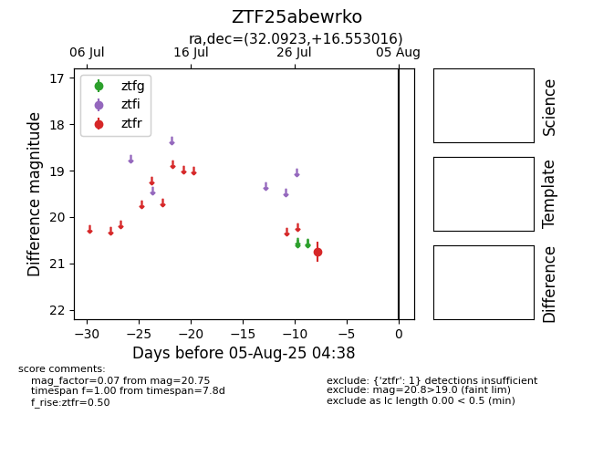

Target ZTF25abewrko at 2025-08-05 04:38, see:
FINK: fink-portal.org/ZTF25abewrko
Lasair: lasair-ztf.lsst.ac.uk/objects/ZTF25abewrko
ALeRCE: alerce.online/object/ZTF25abewrko
alt names
ZTF25abewrko (ztf,fink)
coordinates:
equatorial (ra, dec) = (32.0923,+16.55302)
galactic (l, b) = (148.2896,-42.49916)
photometry
last ztfr=20.75
1 ztfr detections
